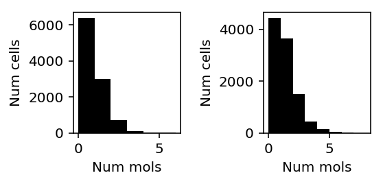

Gamma deconvolution
Table of Contents
Introduction
Deconvolution assuming Gamma or point-Gamma latent gene expression distribution does worse than expected. Investigate why by comparing different implementations on an example problem.
Setup
import numpy as np import pandas as pd import rpy2.robjects import rpy2.robjects.packages import rpy2.robjects.pandas2ri import scipy.special as sp import scipy.stats as st import scmodes import scqtl import scqtl.simple rpy2.robjects.pandas2ri.activate() pscl = rpy2.robjects.packages.importr('pscl')
%matplotlib inline %config InlineBackend.figure_formats = set(['retina'])
import matplotlib.pyplot as plt plt.rcParams['figure.facecolor'] = 'w' plt.rcParams['font.family'] = 'Nimbus Sans L'
Results
Simulation
Simulate a simple example.
np.random.seed(4) N = 1000 s = 1e5 * np.ones(N) mu = 1e-3 # Inverse dispersion = 3 u = st.gamma(a=3, scale=1/3).rvs(size=N) z = (np.random.uniform(size=N) < 0.95).astype(float) x = np.random.poisson(lam=s * mu * u * z)
Report the logit-transformed size of the point mass on zero.
sp.logit(0.05)
-2.9444389791664403
Simple CPU implementation
We implemented Gamma deconvolution using the Nelder-Mead algorithm in the scqtl package.
res = scqtl.simple.fit_zinb(x, s) pd.Series(res, index=['mean', 'inv_disp', 'logodds', 'llik'])
mean 0.000999 inv_disp 3.097253 logodds -2.924002 llik -5284.263660 dtype: float64
Political Science Computation Laboratory implementation
The R package pscl contains a function zeroinfl for fitting
zero-inflated generalized linear models. We can write simple deconvolution
problems in this form.
def pscl_zinb(x, s): f = rpy2.robjects.Formula('x ~ offset(log(s)) + 1 | 1') f.environment['x'] = x f.environment['s'] = s res = pscl.zeroinfl(f, dist='negbin') mean = np.exp(np.array(res.rx2('coefficients').rx2('count'))) inv_disp = np.array(res.rx2('theta')) logodds = np.array(res.rx2('coefficients').rx2('zero')) llik = np.array(res.rx2('loglik')) return pd.Series(np.concatenate([mean, inv_disp, logodds, llik]), index=['mean', 'inv_disp', 'logodds', 'llik'])
pscl_zinb(x, s)
mean 0.000999 inv_disp 3.097312 logodds -2.923963 llik -5284.263659 dtype: float64
Looking at the implementation, there appear to be three major differences:
Comparison of CPU/GPU implementation on real data
We previously fit point-Gamma distributions to the latent gene expression of sorted CD8+ T cells from Zheng et al. 2017.
Read the GPU-fitted results.
gpu_log_mu = pd.read_csv('/project2/mstephens/aksarkar/projects/singlecell-modes/data/deconv-example/zheng-cd8-zinb-log-mu.txt.gz', sep='\t', index_col=0) gpu_log_phi = pd.read_csv('/project2/mstephens/aksarkar/projects/singlecell-modes/data/deconv-example/zheng-cd8-zinb-log-phi.txt.gz', sep='\t', index_col=0) gpu_logodds = pd.read_csv('/project2/mstephens/aksarkar/projects/singlecell-modes/data/deconv-example/zheng-cd8-zinb-logodds.txt.gz', sep='\t', index_col=0)
Compute the log likelihood of the GPU solution.
x = scmodes.dataset.read_10x('/project2/mstephens/aksarkar/projects/singlecell-ideas/data/10xgenomics/cytotoxic_t/filtered_matrices_mex/hg19') s = x.sum(axis=1)
gpu_nb_llik = np.array([st.nbinom(n=np.exp(-log_phi), p=1/(1 + s * np.exp(log_mu + log_phi))).logpmf(x_j) for log_mu, log_phi, x_j in zip(gpu_log_mu.values.T, gpu_log_phi.values.T, x.T)]) case_zero = -np.log1p(np.exp(-gpu_logodds.values.T)) + np.log1p(np.exp(gpu_nb_llik - gpu_logodds.values.T)) case_nonzero = -np.log1p(np.exp(gpu_logodds.values.T)) + gpu_nb_llik gpu_zinb_llik = np.where(x.T < 1, case_zero, case_nonzero)
Write out the GPU results.
gpu_res = pd.DataFrame({'mean': np.exp(gpu_log_mu.values.ravel()), 'inv_disp': np.exp(-gpu_log_phi.values.ravel()), 'logodds': gpu_logodds.values.ravel(), 'llik': gpu_zinb_llik.sum(axis=1)}) gpu_res.to_csv('/project2/mstephens/aksarkar/projects/singlecell-modes/data/gamma-deconv/gpu.txt.gz', sep='\t', compression='gzip')
Run CPU methods.
def fit_all(x, s, method): res = [] for j in range(x.shape[1]): try: res.append(method(x[:,j], s)) except: # Failed to converge res.append(np.array([np.nan, np.nan, np.nan, np.nan])) return pd.DataFrame(res, columns=['mean', 'inv_disp', 'logodds', 'llik'])
scqtl_res = fit_all(x, s, scqtl.simple.fit_zinb) scqtl_res.to_csv('/project2/mstephens/aksarkar/projects/singlecell-modes/data/gamma-deconv/scqtl.txt.gz', sep='\t', compression='gzip')
pscl_res = fit_all(x, s, pscl_zinb) pscl_res.to_csv('/project2/mstephens/aksarkar/projects/singlecell-modes/data/gamma-deconv/pscl.txt.gz', sep='\t', compression='gzip')
Read the results.
gpu_res = pd.read_csv('/project2/mstephens/aksarkar/projects/singlecell-modes/data/gamma-deconv/gpu.txt.gz', sep='\t') pscl_res = pd.read_csv('/project2/mstephens/aksarkar/projects/singlecell-modes/data/gamma-deconv/pscl.txt.gz', sep='\t') scqtl_res = pd.read_csv('/project2/mstephens/aksarkar/projects/singlecell-modes/data/gamma-deconv/scqtl.txt.gz', sep='\t')
Plot the difference in (training) log likelihood.
T = pd.DataFrame({'gpu': gpu_res['llik'], 'cpu': scqtl_res['llik'], 'pscl': pscl_res['llik']}).dropna()
plt.clf() plt.gcf().set_size_inches(3, 3) plt.boxplot((T.values - T['gpu'].values.reshape(-1, 1))[:,1:] / x.shape[0], medianprops={'color': 'k'}, flierprops={'marker': '.', 'markersize': 4}) plt.xticks(range(1, 3), T.columns[1:]) plt.xlabel('Method') plt.ylabel('Per obs diff train llik from GPU') plt.tight_layout()
Look at cases where CPU does much better than GPU.
llik_diff = T['cpu'] - T['gpu'] query = llik_diff[llik_diff / x.shape[0] > 0.5].index
plt.clf() fig, ax = plt.subplots(1, 2) fig.set_size_inches(4, 2) for a, k in zip(ax, query): a.hist(x[:,k], color='k', bins=np.arange(x[:,k].max() + 1)) a.set_xlabel('Num mols') a.set_ylabel('Num cells') fig.tight_layout()

Inspect the GPU result.
gpu_res.iloc[query]
mean inv_disp logodds llik 25 0.000358 1164.383452 -12.345718 -9030.897929 377 0.000647 990.383954 -13.082376 -12151.227973
Inspect the CPU result.
scqtl_res.iloc[query]
mean inv_disp logodds llik 25 0.000356 2.852713e+14 -8.394238 610.494460 377 0.000645 2.852848e+14 -8.395699 1006.905231
The results suggest the log likelihood computation had a numerical problem. Check against a Poisson model.
pd.DataFrame([scqtl.simple.fit_pois(xj, s) for xj in x[:,query].T], columns=['mean', 'llik'])
mean llik 0 0.000358 -9030.866338 1 0.000647 -12151.180012
Check our implementation of ZINB log likelihood.
scmodes.benchmark.deconvolution.zinb_llik(x, s.reshape(-1, 1) * gpu_res['mean'].values, gpu_res['inv_disp'].values, gpu_res['logodds'].values).sum(axis=0)[query]
array([ -9030.89792855, -12151.22797265])